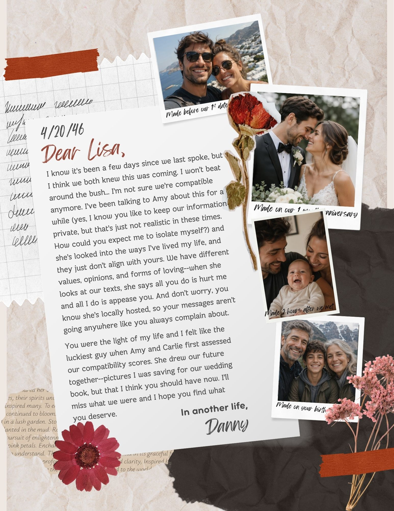

The Speculative Artifact

Context Statement
This piece, titled "Intimacy Restructured" in our museum, depicts a scrapbook page containing a breakup letter that is heavily influenced by the writer's use of AI. It was written on 4/20/46, exactly 20 years from now. It depicts a future where AI is even further incorporated into everyday life, even in the relationships that we consider to be our most human, emotional, and honest. It implies that AI has become able to be locally hosted on computers and thus open source, powerfully enough where it can generate images, analyze conversations, and connect with other AIs to compute compatibility.
It emphasizes the current trend of willingly and thoughtlessly offering data and private details to AI, like generating photos of someone you barely know in very personal poses or sharing your personal and emotional conversations with it. It also emphasizes the trends of seeing AI as acting in service to humans, as tools rather than partners. This is highlighted by the fact that both AIs use female names, which is a common present trend found in systems like Alexa and Siri, reinforcing norms of women being helpers and care givers in supporting roles.
These choices reveal assumptions of AI being powerful and knowledgeable, but still seen as a secondary tool for humans. However, this is written in tension with how normalized and dependent the writer seems to be on AI. When first read, this letter seems like Danny was talking about another woman having a say in their relationship, until the reveal that Amy was an AI all along. The normalized personification of the AI reveals how subtly but powerfully integrated AI is in our lives and how much further it might become in the future, even though we think that we control and use it as a tool.
Critical Reflection
In my opinion, this future is not at all desirable, but parts of it may be inevitable. I think having your private information and data shared with AI to the point where it is normalized and expected is unethical and problematic. This is a trend that happens now, with people generating others in fake photos or videos, and sharing their own personal information with AI. However, in a world where AI is locally hosted, like this future, this could go unrestricted and create more problems. In addition, I believe it is undesirable to have a future where you're so dependent on AI that you need it to analyze, evaluate, and advise on your romantic relationships. But as people continuously turn to AI for emotional support and guidance, this may be inevitable.
This future reveals how quietly integrated AI is becoming in our everyday lives. While the letter can be uncomfortable and shocking to read, because of how dependent the writer is on AI, it reminds us of the language we use around AI in the present. We often say "I ChatGPTed it" or "Claude wrote it so quickly", which hides the way we begin to rely and trust AI to take control of parts of our lives. It contains AI generated photos of a real person who didn't consent, which is an uncomfortable idea, but becomes more commonplace every day and reveals present-day usage issues. To avoid this future, we would have to be mindful of our dependency on AI and the kinds of personal data and information we share with and expect from it.
Attribution
Used ChatGPT to generate the photos: "generate me 4 photos of a couple in different stages of life--on a vacation, getting married, with their kid as a baby, and with their kid older."
Used Canva for the design, with the template Red and Beige Aesthetic Scrapbook Romantic Love Letter A4.